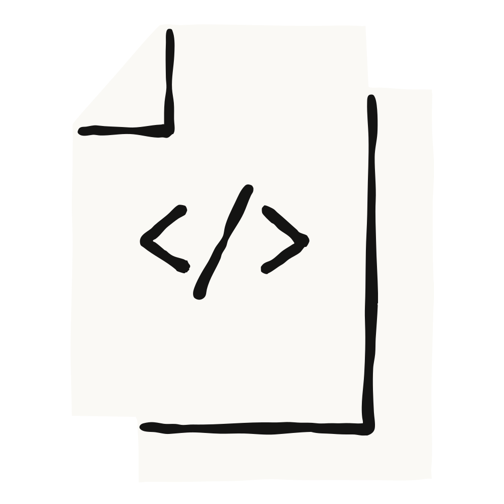
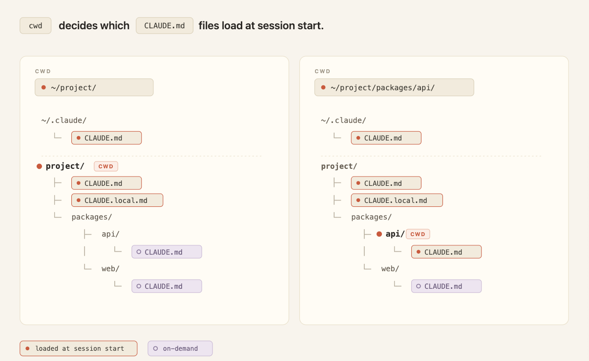
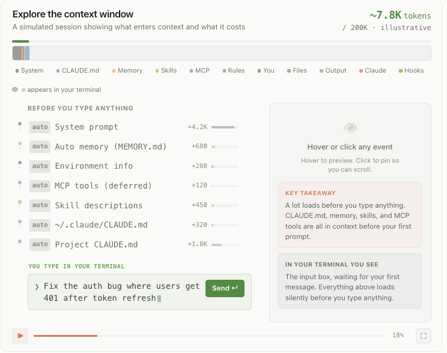

Claude Code는 Claude의 동작을 맞춤 설정하고 지시하기 위한 7가지 방법을 제공합니다. CLAUDE.md 파일, 룰(rules), 스킬(skills), 서브에이전트(subagents), 훅(hooks), 출력 스타일(output styles), 그리고 시스템 프롬프트 덧붙이기입니다. 각 방법은 지시가 언제 로드되는지, 세션 동안 어떻게 유지되는지, 컨텍스트 비용이 얼마인지에서 차이가 납니다.
CLAUDE.md 마크다운 파일은 세션 시작 시 로드되어 세션 내내 유지됩니다. 빌드 명령어, 디렉터리 구조, 모노레포 구조, 코딩 규칙, 팀 관례를 담기에 가장 적합합니다.
두 가지 종류가 있습니다.

룰은 .claude/rules/에 저장되는 마크다운 파일로, 제약 조건이나 규칙을 명시합니다. 범위가 지정되지 않은 룰은 세션 시작 시 로드되고 압축 시 다시 주입됩니다. 경로 범위가 지정된 룰은 관련 파일을 건드릴 때만 로드되어 토큰 낭비를 줄입니다.
경로 범위 룰 예시:
---
paths:
- "src/api/**"
- "**/*.handler.ts"
---
모든 API 핸들러는 처리 전에 Zod로 입력을 검증해야 한다.스킬은 .claude/skills/ 아래에 폴더 형태로 존재하며, 지시·스크립트·리소스를 담습니다. 세션 시작 시에는 스킬 이름과 설명만 로드되고, 슬래시 명령어나 자동 매칭으로 호출될 때 본문 전체가 로드됩니다.
예로 /code-review, 배포 워크플로, 릴리스 체크리스트 등이 있습니다. 압축 시에는 호출되었던 스킬이 공유 토큰 예산 한도까지 다시 주입되며, 오래된 스킬부터 먼저 제외됩니다.
서브에이전트는 .claude/agents/에 있는 마크다운 파일로, 특정 곁가지 작업을 위한 독립된 보조 에이전트를 정의합니다. 이름·설명·모델·도구 접근 권한은 YAML 프런트매터로 지정하고, 그 뒤에 시스템 프롬프트 내용이 옵니다.
세션 시작 시에는 메타데이터만 로드되고, Agent 도구로 호출될 때만 본문 전체가 로드됩니다. 서브에이전트는 격리된 컨텍스트 윈도에서 실행되며, 최종 메시지와 메타데이터만 메인 세션으로 돌아옵니다. 최대 5단계까지 중첩할 수 있습니다.

훅은 사용자가 정의한 명령어, HTTP 엔드포인트, 또는 LLM 프롬프트로, 파일 편집·도구 호출·세션 시작 같은 라이프사이클 이벤트에서 발동합니다. settings.json, 관리형 정책 설정, 또는 스킬/에이전트 프런트매터에 등록합니다.
종류로는 command, HTTP, mcp_tool, prompt, agent 훅이 있습니다. 모두 결정론적으로 발동되며, 설정이 메인 컨텍스트 윈도 밖에 있으므로 컨텍스트 비용이 낮습니다.

출력 스타일은 .claude/output-styles/에 있으며 시스템 프롬프트에 지시를 주입합니다. 매 세션 시작 시 로드되고 절대 압축되지 않아, 지시 준수 가중치가 가장 높지만 컨텍스트 비용은 중간 수준입니다.
내장 스타일로는 Proactive, Explanatory, Learning이 있어, 커스텀 스타일 파일을 관리하지 않고도 흔한 요구를 충족합니다. 커스텀 스타일은 기본 지시를 대체하는데, 여기에는 변경 범위 설정, 주석 추가, 보안 처리, 검증 습관에 관한 핵심 지침도 포함됩니다.
append-system-prompt 플래그는 Claude의 핵심 역할을 바꾸지 않고 지시를 추가합니다. 세션 간에 유지되지 않고, 명령 실행 시점에 전달되는 단일 호출에만 적용됩니다.
개발자는 스킬, 서브에이전트, 훅, 출력 스타일을 플러그인으로 묶어 팀원과 프로젝트 간에 일관된 구성을 공유할 수 있습니다. 자세한 안내는 Claude Code 모범 사례 문서와 스킬 개발 가이드에 있습니다.